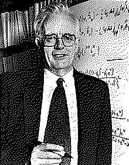

| годы жизни | 1924–2022 |
| страна | Англия · Оксфорд |
| область | статистика |
| главное | модель пропорциональных рисков (1972) · планирование эксперимента |
| характер | одна из самых цитируемых работ в науке |
Он научил считать не «сколько», а «когда».
не факт события, а время до него.
Многие вопросы не про «да или нет», а про «когда»: когда пациент выздоровеет, когда деталь откажет, когда пользователь уйдёт. Данные тут неполны — наблюдение обрывается, а событие ещё не наступило: цензурирование1. Обычная регрессия с этим не справляется.
Дэвид Кокс дал модель, которая справляется2. Она смотрит не на само время, а на мгновенный риск события — и позволяет сравнивать группы, не зная точной формы кривой. Достаточно предположить, что риски групп пропорциональны друг другу; остальное модель берёт из данных.
«Хорошая модель нужна не чтобы описать всё, а чтобы ответить на вопрос.» — по духу подхода Кокса
Работа 1972 года стала одной из самых цитируемых во всей науке — от медицины до отказов техники. В продуктовой аналитике это язык удержания: не «сколько ушло», а «как быстро уходят и что это ускоряет».
Кокс много занимался и планированием эксперимента — как поставить опыт, чтобы из него вообще можно было что-то извлечь. Та же трезвость: сначала честный план, потом любые формулы.